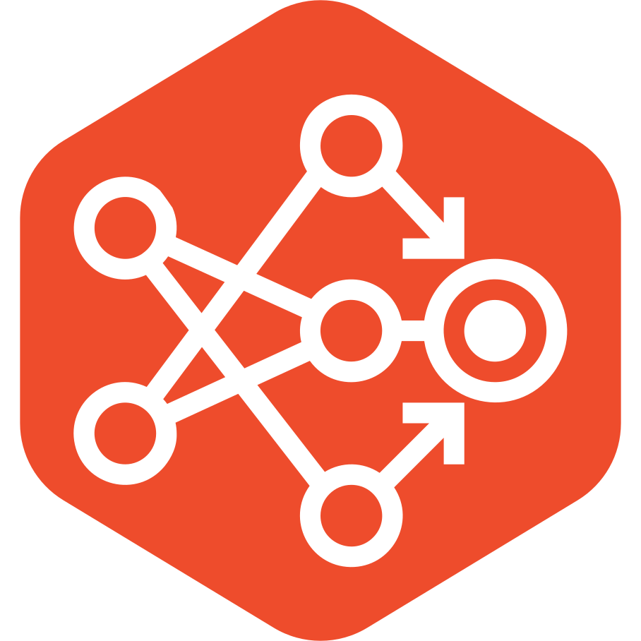
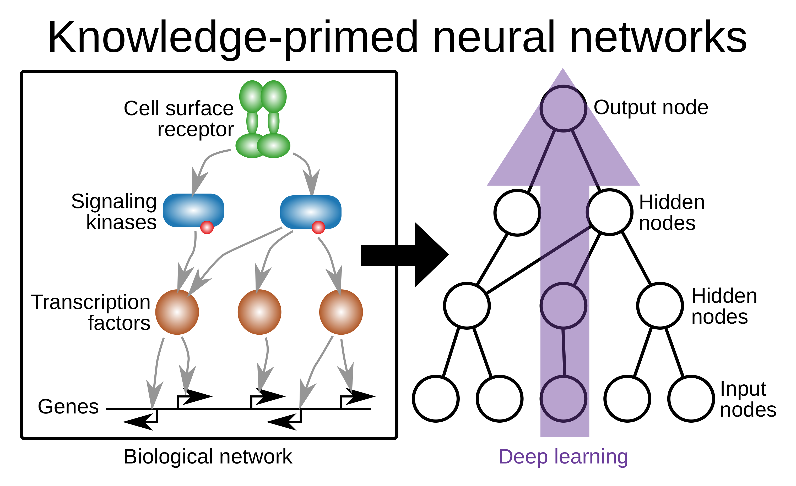
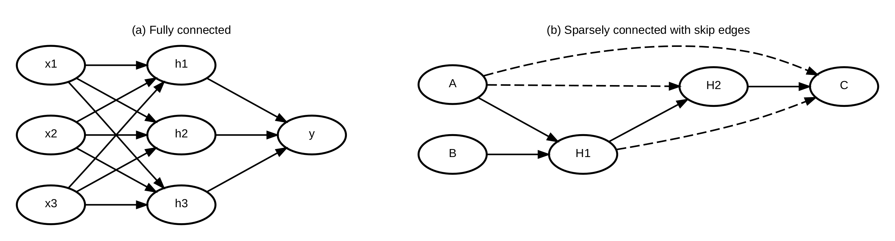
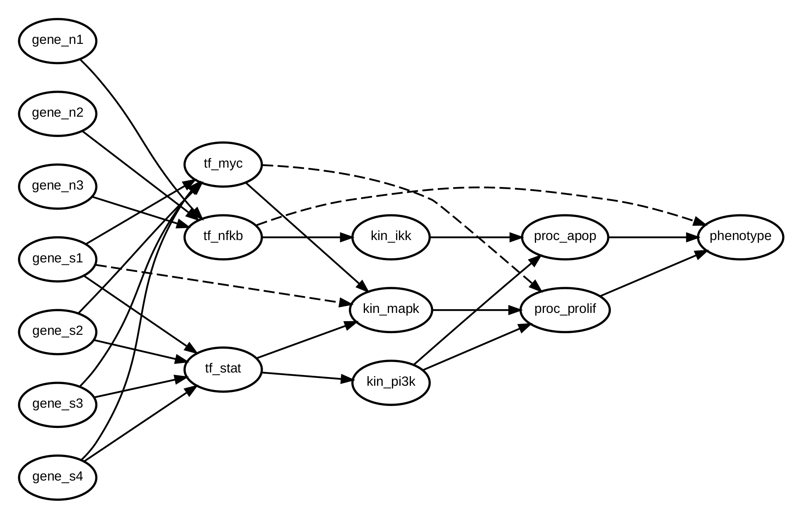

kpnn2



![PyPI](https://img.shields.io/pypi/v/kpnn2?labelColor=555&logo=data%3Aimage%2Fsvg%2Bxml%3Bbase64%2CPHN2ZyBjbGlwLXJ1bGU9ImV2ZW5vZGQiIGZpbGwtcnVsZT0iZXZlbm9kZCIgaGVpZ2h0PSIzNjguNTY4IiBzdHJva2UtbGluZWNhcD0ic3F1YXJlIiBzdHJva2UtbGluZWpvaW49InJvdW5kIiBzdHJva2UtbWl0ZXJsaW1pdD0iMS41IiB2aWV3Qm94PSIxMzguOTk4IDExMi4wNzkgMzE3LjMxMCAzNjguNTY4IiB3aWR0aD0iMzE3LjMxMCIgeG1sbnM9Imh0dHA6Ly93d3cudzMub3JnLzIwMDAvc3ZnIj48ZyB0cmFuc2Zvcm09InRyYW5zbGF0ZSg3Mi41OSAtNjMuMjA5KSI%2BPHBhdGggZD0ibTY3My40MSAyMzYuMDE2LTY0LjI3MSA4LjI1MnYyODEuMzU3aDY0LjI3NnoiIGZpbGw9IiNmZmNhMWUiIHN0cm9rZT0iI2Q3YzViMiIgc3Ryb2tlLXdpZHRoPSIxLjExIiB0cmFuc2Zvcm09Im1hdHJpeCgxLjAyMzY1IC0uMzcyNzUgLjIyMTE1IC4wODA5MyAtNDIzLjA4NiA0NTcuNDQ4KSIvPjxwYXRoIGQ9Im02MDkuMTM5IDI0NC4yNjhoNjQuMjc2djI4MS4zNTdoLTY0LjI3NnoiIGZpbGw9IiNmZmQyNDEiIHN0cm9rZT0iI2Q3YzViMiIgc3Ryb2tlLXdpZHRoPSIuMzUiIHRyYW5zZm9ybT0ibWF0cml4KDMuOTMzNTkgLTEuNDM4MzcgMCAuNTMwODQgLTIyNjYuNDMgMTA4Ny45NCkiLz48cGF0aCBkPSJtNjA5LjEzOSAyNDQuMjY4aDY0LjI3NnYyODEuMzU3aC02NC4yNzZ6IiBmaWxsPSIjMmY2NDkwIiBzdHJva2U9IiNkMWUzZjIiIHN0cm9rZS13aWR0aD0iLjYyIiB0cmFuc2Zvcm09Im1hdHJpeCgxLjk2MDQgLS43MTY4NSAuMjIxNiAuMDc5MjcgLTExMTguNTUgNjM5LjMzOSkiLz48cGF0aCBkPSJtNjA5LjEzOSAyNDQuMjY4aDY0LjI3NnYyODEuMzU3aC02NC4yNzZ6IiBmaWxsPSIjMzc3NWE4IiBzdHJva2U9IiNkMWUzZjIiIHN0cm9rZS13aWR0aD0iMS4xNSIgdHJhbnNmb3JtPSJtYXRyaXgoMS4wMjI4MSAtLjM3NCAwIDEuMDU2OTUgLTQzMC43NzMgMjE0LjE3OCkiLz48cGF0aCBkPSJtNjA5LjEzOSAyNDQuMjY4aDY0LjI3NnYyODEuMzU3aC02NC4yNzZ6IiBmaWxsPSIjMmY2NDkwIiBzdHJva2U9IiNmZmYiIHN0cm9rZS13aWR0aD0iMS4xNyIgdHJhbnNmb3JtPSJtYXRyaXgoLS45NzQ5OSAtLjM0OTI0IDAgMS4wNTY5NSA3ODYuMTk0IDE5OS4yMDgpIi8%2BPHBhdGggZD0ibTYwOS4xMzkgMjQ0LjI2OGg2NC4yNzZ2MjgxLjM1N2gtNjQuMjc2eiIgZmlsbD0iI2VmZWVlYSIgc3Ryb2tlPSIjZDhkOGQ4IiBzdHJva2Utd2lkdGg9IjEuNDQiIHRyYW5zZm9ybT0ibWF0cml4KC0uOTc0OTkgLS4zNTY1MiAwIC4yNjg4NSA3ODYuMTk0IDYxOC4zNTUpIi8%2BPGcgc3Ryb2tlPSIjZDFlM2YyIj48cGF0aCBkPSJtNjA5LjEzOSAyNDQuMjY4aDY0LjI3NnYyODEuMzU3aC02NC4yNzZ6IiBmaWxsPSIjMmY2NDkwIiBzdHJva2Utd2lkdGg9IjEuNDQiIHRyYW5zZm9ybT0ibWF0cml4KC0uOTY4MzQgLS4zNTQwOSAwIC41MzA3NyA3MTkuNDgzIDQyNy41KSIvPjxwYXRoIGQ9Im02MDkuMTM5IDI0NC4yNjhoNjQuMjc2djI4MS4zNTdoLTY0LjI3NnoiIGZpbGw9IiMzNzc1YTgiIHN0cm9rZS13aWR0aD0iMS4yIiB0cmFuc2Zvcm09Im1hdHJpeCguOTM1NTQgLS4zNDIxIDAgMS4wNTY5NSAtMzExLjg5MiAxNzAuNDkyKSIvPjxwYXRoIGQ9Im02MDkuMTM5IDI0NC4yNjhoNjQuMjc2djI4MS4zNTdoLTY0LjI3NnoiIGZpbGw9IiMzNzc1YTgiIHN0cm9rZS13aWR0aD0iMS40MyIgdHJhbnNmb3JtPSJtYXRyaXgoLjk3NDIgLS4zNTYyMyAwIC41MzA4NCAtNDYzLjc0NCA0MjguNzYxKSIvPjxwYXRoIGQ9Im02Ny41NzUgMzkzLjE2MSA2Mi4xMjEgMjIuNDY1IDE4OC43MDgtNjguMjk5bS0xMjUuMTY1LTI5LjE0MSAxMjQuNzMyLTQ1LjYwMiIgZmlsbD0ibm9uZSIvPjwvZz48cGF0aCBkPSJtMzE4LjQwNCAzNDcuMzI3IDYzLjkzOS0yMy4yMDkiIGZpbGw9Im5vbmUiIHN0cm9rZT0iI2Q3YzViMiIvPjxwYXRoIGQ9Im02MDkuMTM5IDI0NC4yNjhoNjQuMjc2djI4MS4zNTdoLTY0LjI3NnoiIGZpbGw9IiMyZjY0OTAiIHN0cm9rZT0iI2QxZTNmMiIgc3Ryb2tlLXdpZHRoPSIxLjE2IiB0cmFuc2Zvcm09Im1hdHJpeCguOTY3ODggLS4zNTI0NCAuMjIxMTUgLjA4MDkzIC01NzYuMTY4IDUxMy41ODMpIi8%2BPGNpcmNsZSBjeD0iNjM3LjUxNyIgY3k9IjI2MC4wMDEiIGZpbGw9IiNmZmYiIHI9IjE1LjcxIiB0cmFuc2Zvcm09Im1hdHJpeCguNzgyNiAtLjQwMjQgLjA1NDk0IC44NjE0IC0yOTUuMzYzIDMwNC45MzQpIi8%2BPHBhdGggZD0ibTE5NS43ODYgMTk4LjEyNSA2MS42OTYgMjIuMTI2IiBmaWxsPSJub25lIiBzdHJva2U9IiNkMWUzZjIiLz48cGF0aCBkPSJtNjczLjQxNSAyNDQuMjY4aC02NC4yNzZsLjAxOCAyODIuNDA1IDY0LjI1OC0xLjA0OHoiIGZpbGw9IiNmZmQyNDEiIHN0cm9rZT0iI2Q3YzViMiIgc3Ryb2tlLXdpZHRoPSIxLjM3IiB0cmFuc2Zvcm09Im1hdHJpeCgxLjAyMjgxIC0uMzc0IDAgLjUyODQzIC00MzAuNzczIDQ5MS45ODMpIi8%2BPHBhdGggZD0ibTY3My40MTUgMjQ0LjI2OGgtNjQuMjc2bC4wMDEgMjgxLjc1OCA2NC4yNzUtLjQwMXoiIGZpbGw9IiNmZmQyNDEiIHN0cm9rZT0iI2Q3YzViMiIgc3Ryb2tlLXdpZHRoPSIxLjQ4IiB0cmFuc2Zvcm09Im1hdHJpeCguOTM1NTQgLS4zNDIxIDAgLjUyNzQzIC0zMTEuODkyIDQ0OC44MjIpIi8%2BPGNpcmNsZSBjeD0iNjM3LjUxNyIgY3k9IjI2MC4wMDEiIGZpbGw9IiNmZWZkZmQiIHI9IjE1LjcxIiB0cmFuc2Zvcm09Im1hdHJpeCguNzcwNzQgLS4zOTYzIC4wNTE1NiAuODA4MzIgLTIwNS45MTYgNTA5LjQxMSkiLz48cGF0aCBkPSJtMTkyLjQxMiA0NjguMDU5IDEyNi4wMjgtNDUuOTc3IiBmaWxsPSJub25lIiBzdHJva2U9IiNkN2M1YjIiLz48L2c%2BPC9zdmc%2B)

![PyPI - Downloads](https://img.shields.io/pypi/dm/kpnn2?labelColor=555&logo=data%3Aimage%2Fsvg%2Bxml%3Bbase64%2CPHN2ZyBjbGlwLXJ1bGU9ImV2ZW5vZGQiIGZpbGwtcnVsZT0iZXZlbm9kZCIgaGVpZ2h0PSIzNjguNTY4IiBzdHJva2UtbGluZWNhcD0ic3F1YXJlIiBzdHJva2UtbGluZWpvaW49InJvdW5kIiBzdHJva2UtbWl0ZXJsaW1pdD0iMS41IiB2aWV3Qm94PSIxMzguOTk4IDExMi4wNzkgMzE3LjMxMCAzNjguNTY4IiB3aWR0aD0iMzE3LjMxMCIgeG1sbnM9Imh0dHA6Ly93d3cudzMub3JnLzIwMDAvc3ZnIj48ZyB0cmFuc2Zvcm09InRyYW5zbGF0ZSg3Mi41OSAtNjMuMjA5KSI%2BPHBhdGggZD0ibTY3My40MSAyMzYuMDE2LTY0LjI3MSA4LjI1MnYyODEuMzU3aDY0LjI3NnoiIGZpbGw9IiNmZmNhMWUiIHN0cm9rZT0iI2Q3YzViMiIgc3Ryb2tlLXdpZHRoPSIxLjExIiB0cmFuc2Zvcm09Im1hdHJpeCgxLjAyMzY1IC0uMzcyNzUgLjIyMTE1IC4wODA5MyAtNDIzLjA4NiA0NTcuNDQ4KSIvPjxwYXRoIGQ9Im02MDkuMTM5IDI0NC4yNjhoNjQuMjc2djI4MS4zNTdoLTY0LjI3NnoiIGZpbGw9IiNmZmQyNDEiIHN0cm9rZT0iI2Q3YzViMiIgc3Ryb2tlLXdpZHRoPSIuMzUiIHRyYW5zZm9ybT0ibWF0cml4KDMuOTMzNTkgLTEuNDM4MzcgMCAuNTMwODQgLTIyNjYuNDMgMTA4Ny45NCkiLz48cGF0aCBkPSJtNjA5LjEzOSAyNDQuMjY4aDY0LjI3NnYyODEuMzU3aC02NC4yNzZ6IiBmaWxsPSIjMmY2NDkwIiBzdHJva2U9IiNkMWUzZjIiIHN0cm9rZS13aWR0aD0iLjYyIiB0cmFuc2Zvcm09Im1hdHJpeCgxLjk2MDQgLS43MTY4NSAuMjIxNiAuMDc5MjcgLTExMTguNTUgNjM5LjMzOSkiLz48cGF0aCBkPSJtNjA5LjEzOSAyNDQuMjY4aDY0LjI3NnYyODEuMzU3aC02NC4yNzZ6IiBmaWxsPSIjMzc3NWE4IiBzdHJva2U9IiNkMWUzZjIiIHN0cm9rZS13aWR0aD0iMS4xNSIgdHJhbnNmb3JtPSJtYXRyaXgoMS4wMjI4MSAtLjM3NCAwIDEuMDU2OTUgLTQzMC43NzMgMjE0LjE3OCkiLz48cGF0aCBkPSJtNjA5LjEzOSAyNDQuMjY4aDY0LjI3NnYyODEuMzU3aC02NC4yNzZ6IiBmaWxsPSIjMmY2NDkwIiBzdHJva2U9IiNmZmYiIHN0cm9rZS13aWR0aD0iMS4xNyIgdHJhbnNmb3JtPSJtYXRyaXgoLS45NzQ5OSAtLjM0OTI0IDAgMS4wNTY5NSA3ODYuMTk0IDE5OS4yMDgpIi8%2BPHBhdGggZD0ibTYwOS4xMzkgMjQ0LjI2OGg2NC4yNzZ2MjgxLjM1N2gtNjQuMjc2eiIgZmlsbD0iI2VmZWVlYSIgc3Ryb2tlPSIjZDhkOGQ4IiBzdHJva2Utd2lkdGg9IjEuNDQiIHRyYW5zZm9ybT0ibWF0cml4KC0uOTc0OTkgLS4zNTY1MiAwIC4yNjg4NSA3ODYuMTk0IDYxOC4zNTUpIi8%2BPGcgc3Ryb2tlPSIjZDFlM2YyIj48cGF0aCBkPSJtNjA5LjEzOSAyNDQuMjY4aDY0LjI3NnYyODEuMzU3aC02NC4yNzZ6IiBmaWxsPSIjMmY2NDkwIiBzdHJva2Utd2lkdGg9IjEuNDQiIHRyYW5zZm9ybT0ibWF0cml4KC0uOTY4MzQgLS4zNTQwOSAwIC41MzA3NyA3MTkuNDgzIDQyNy41KSIvPjxwYXRoIGQ9Im02MDkuMTM5IDI0NC4yNjhoNjQuMjc2djI4MS4zNTdoLTY0LjI3NnoiIGZpbGw9IiMzNzc1YTgiIHN0cm9rZS13aWR0aD0iMS4yIiB0cmFuc2Zvcm09Im1hdHJpeCguOTM1NTQgLS4zNDIxIDAgMS4wNTY5NSAtMzExLjg5MiAxNzAuNDkyKSIvPjxwYXRoIGQ9Im02MDkuMTM5IDI0NC4yNjhoNjQuMjc2djI4MS4zNTdoLTY0LjI3NnoiIGZpbGw9IiMzNzc1YTgiIHN0cm9rZS13aWR0aD0iMS40MyIgdHJhbnNmb3JtPSJtYXRyaXgoLjk3NDIgLS4zNTYyMyAwIC41MzA4NCAtNDYzLjc0NCA0MjguNzYxKSIvPjxwYXRoIGQ9Im02Ny41NzUgMzkzLjE2MSA2Mi4xMjEgMjIuNDY1IDE4OC43MDgtNjguMjk5bS0xMjUuMTY1LTI5LjE0MSAxMjQuNzMyLTQ1LjYwMiIgZmlsbD0ibm9uZSIvPjwvZz48cGF0aCBkPSJtMzE4LjQwNCAzNDcuMzI3IDYzLjkzOS0yMy4yMDkiIGZpbGw9Im5vbmUiIHN0cm9rZT0iI2Q3YzViMiIvPjxwYXRoIGQ9Im02MDkuMTM5IDI0NC4yNjhoNjQuMjc2djI4MS4zNTdoLTY0LjI3NnoiIGZpbGw9IiMyZjY0OTAiIHN0cm9rZT0iI2QxZTNmMiIgc3Ryb2tlLXdpZHRoPSIxLjE2IiB0cmFuc2Zvcm09Im1hdHJpeCguOTY3ODggLS4zNTI0NCAuMjIxMTUgLjA4MDkzIC01NzYuMTY4IDUxMy41ODMpIi8%2BPGNpcmNsZSBjeD0iNjM3LjUxNyIgY3k9IjI2MC4wMDEiIGZpbGw9IiNmZmYiIHI9IjE1LjcxIiB0cmFuc2Zvcm09Im1hdHJpeCguNzgyNiAtLjQwMjQgLjA1NDk0IC44NjE0IC0yOTUuMzYzIDMwNC45MzQpIi8%2BPHBhdGggZD0ibTE5NS43ODYgMTk4LjEyNSA2MS42OTYgMjIuMTI2IiBmaWxsPSJub25lIiBzdHJva2U9IiNkMWUzZjIiLz48cGF0aCBkPSJtNjczLjQxNSAyNDQuMjY4aC02NC4yNzZsLjAxOCAyODIuNDA1IDY0LjI1OC0xLjA0OHoiIGZpbGw9IiNmZmQyNDEiIHN0cm9rZT0iI2Q3YzViMiIgc3Ryb2tlLXdpZHRoPSIxLjM3IiB0cmFuc2Zvcm09Im1hdHJpeCgxLjAyMjgxIC0uMzc0IDAgLjUyODQzIC00MzAuNzczIDQ5MS45ODMpIi8%2BPHBhdGggZD0ibTY3My40MTUgMjQ0LjI2OGgtNjQuMjc2bC4wMDEgMjgxLjc1OCA2NC4yNzUtLjQwMXoiIGZpbGw9IiNmZmQyNDEiIHN0cm9rZT0iI2Q3YzViMiIgc3Ryb2tlLXdpZHRoPSIxLjQ4IiB0cmFuc2Zvcm09Im1hdHJpeCguOTM1NTQgLS4zNDIxIDAgLjUyNzQzIC0zMTEuODkyIDQ0OC44MjIpIi8%2BPGNpcmNsZSBjeD0iNjM3LjUxNyIgY3k9IjI2MC4wMDEiIGZpbGw9IiNmZWZkZmQiIHI9IjE1LjcxIiB0cmFuc2Zvcm09Im1hdHJpeCguNzcwNzQgLS4zOTYzIC4wNTE1NiAuODA4MzIgLTIwNS45MTYgNTA5LjQxMSkiLz48cGF0aCBkPSJtMTkyLjQxMiA0NjguMDU5IDEyNi4wMjgtNDUuOTc3IiBmaWxsPSJub25lIiBzdHJva2U9IiNkN2M1YjIiLz48L2c%2BPC9zdmc%2B)
Turn a named edgelist into sparsely connected PyTorch layers you assemble yourself.
Introduction¶
Deep neural networks are accurate predictors but opaque ones. Their hidden units carry no names: a unit deep inside a trained network has no meaning outside the model, so attribution methods, which score how much each input or unit contributes to a prediction, can say which units matter but not what they are. For scientific use this is a serious limitation, because a prediction can be checked against data, but only a mechanism can be tested by experiment. One line of work in interpretable machine learning therefore builds meaning into the architecture itself, so that the internal units of a network correspond to entities a scientist already knows by name.

Figure 1. From a biological network (left) to a knowledge-primed neural network (right). Every node of the network is a named entity from the prior; the arrow marks the direction of information flow.
A knowledge-primed neural network (KPNN) achieves this by encoding prior knowledge as a graph. Every node of the network stands for a named entity, and an edge exists only where the prior records a relationship between two entities. Connections the prior does not contain are absent rather than merely small, so sparsity, which elsewhere in deep learning serves speed or memory, here carries the meaning of the model. Figure 1 shows the entity-based form introduced by Fortelny and Bock (2020). On the left, a cell-surface receptor signals through kinases to transcription factors, which regulate genes. On the right, the same wiring becomes a neural network that runs against the direction of signaling: gene expression enters at the input nodes, passes through transcription factors and kinases in the hidden layers, and reaches the receptor at the output node. Because each hidden node stands for a specific protein, an attribution score on that node says how much the trained model relies on that protein's unit, rather than on an anonymous one. Related models, also called visible or biologically informed neural networks, derive the graph from pathway databases or ontologies, such as P-NET, which is built on a hierarchy of Reactome pathways (Elmarakeby et al., 2021). Nothing in the construction is specific to biology: any domain whose entities have stable names and known relationships can be modeled the same way.
PyTorch can express such networks, but its standard components do
not. nn.Linear connects every unit of one layer to every unit of
the next (Figure 2a); a KPNN connects only the pairs its prior
names, and many of its edges skip layers (Figure 2b). The common
workaround multiplies each weight matrix by a fixed 0/1 mask.
Deriving those masks is a parsing problem in its own right: nodes
must be sorted into layers, edges that skip layers routed to the
correct inputs, and the column order of every layer fixed; all of
it must be redone whenever the prior changes. The more serious
difficulty is less visible. A KPNN reports its results by name, yet
inside the model a name is only an integer position, and nothing in
PyTorch checks that the two still agree. When they drift apart,
after a database update, with a feature table in a different column
order, or on reloading a checkpoint, the model still trains and the
loss looks normal, but the score reported for one gene belongs to
another. Such an error raises no exception and leaves no trace in
the metrics. Because published models have typically been
implemented with code written for one architecture, each new
project rebuilds this machinery and meets these pitfalls anew.

Figure 2. (a) Dense adjacent layers, the usual PyTorch case. (b) A sparsely connected network with skip edges (dashed), the same graph as on the Skip edges page.
kpnn2 resolves this by separating what the prior determines from
what the modeler decides. The prior determines which connections
exist and what each node is called, and kpnn2 handles exactly
that part. It derives the connectivity from a named edgelist once,
keeps every node name attached to its tensor position from parsing
to attribution, and checks that correspondence wherever names and
positions meet: when the prior is parsed, when input columns are
aligned, when a checkpoint is loaded, and when attribution scores
are labeled. Everything else, including activations, normalization,
losses, the training loop, and the choice of attribution method,
stays in an ordinary PyTorch nn.Module that you write. The package
provides building blocks, not a finished model: there is no model
compiler and no ready-made network, so the model remains plain
PyTorch that can be read, changed, and extended like any other.
In practice, kpnn2 provides four kinds of building blocks:
- Parsers.
parse_layered()sorts an acyclic prior into layers and keeps each edge that skips layers in the layer it feeds.parse_adjacency()places all nodes in a single vector, which allows feedback loops and self-loops. - Sparse layers.
PackedLinear(one trainable weight per edge),MaskedLinear(a masked dense matrix for small graphs), andPackedMultiheadAttention(attention restricted to the prior's edges) take the place ofnn.Linearandnn.MultiheadAttention. - Name alignment.
align_inputs()orders feature columns by name, andmap_node_attributions()labels attribution tensors with node names. - Checks. Malformed priors, missing input columns, checkpoints
from a different prior, and attribution tensors of the wrong
width raise
Kpnn2Error; What kpnn2 checks lists each check.
Core workflow walks through the steps with a minimal model, and Why not custom PyTorch? sets that model against the same network written by hand, including a silent failure that only the hand-written version lets through. Supported architectures covers feedforward, recurrent, and attention-based designs, and the Feedforward example builds and interprets a KPNN end to end. How we test describes tests that pin scientific claims as well as code, and a frozen notebook reproduces the simulated node-recovery result of Fortelny and Bock (2020).
What kpnn2 checks¶
Each check sits where a name meets a tensor position, and each catches a mistake that would not show up in the loss.
- Malformed edgelists are rejected. Both parsers reject missing
columns, missing or empty names, and duplicate edges, which would
otherwise collapse into one weight.
parse_layered()also rejects cycles and self-loops. - Edges that skip layers stay in the wiring. Such an edge is
part of the layer it feeds, so that layer's input width includes
it, and
gather_hop_inputs()raises when an earlier layer it reads was never kept. - Input columns are matched by name.
align_inputs()finds each input node's column in your feature table. A reordered table, or one with extra columns, still lines up. A missing or duplicated name raises. - Checkpoints refuse a different prior. Each sparse layer saves
a digest of its wiring and, with
identity=spec.fingerprint, the fingerprint of the named prior. A mismatch raises instead of loading; A silent failure shows what the hand-written version does. - Attribution scores are labeled from the parsed graph.
map_node_attributions()names every position of a layer tensor and raises when the tensor's width does not match that layer.
The checks stop at that boundary. Your forward(), your prior's
biology, and your attribution method stay yours to get right.
How we test lists what the tests pin and
what they do not prove.
Core workflow¶
An edgelist is a table of directed connections: each row links
a source node to a target node. For example:
| source | target |
|---|---|
| A | H |
| B | H |
| H | C |
The graph is what that table describes: the named nodes, and the directed edges between them. Edgelist and graph are the same object in two forms — the table you pass in, and the structure it encodes. These docs use "graph" in that sense throughout: the prior wiring that becomes the architecture. It never means PyTorch's autograd graph, and never a graph as data in the GNN sense (see Why not a GNN?). Concepts defines the rest of the vocabulary.
- Define a model architecture as an edgelist with named
sourceandtargetnodes. - Parse it. For a
directed acyclic graph (DAG) you want
as layers, call
parse_layered(). It returns aLayeredSpecwith one packed hop per layer — a hop being everything entering one layer. For cycles, or for one shared state vector over all nodes, callparse_adjacency(). It returns anAdjacencySpecwhose edges are packed indices. A DAG is valid for both, so the layout is your choice. - Write an
nn.Modulewith onePackedLinearper hop inspec.hops, and feed each onegather_hop_inputs(saved, hop). Skip edges, whose endpoints are more than one layer apart, already sit inside those hops, so there is nothing extra to call.MaskedLinear(hop.to_mask())is the dense hatch for small graphs. - Align feature names with
align_inputs(), then index the host matrix. - Train with ordinary PyTorch.
- Optionally run Captum (or another method) yourself, then label a
layer tensor with
map_node_attributions()(returns xarray). - Optionally fold those scores with
aggregate_node_attributions(). - A checkpoint is
spec.to_dict()plusstate_dict, not weights alone.
The snippet below is a minimal run of steps 1–4, using the
edgelist from the table above. Column order in the input table
does not matter: align_inputs() matches names and returns a
column index. Skip edges are
omitted here; Skip edges works them
through. Why not custom PyTorch?
sets this hop loop against the equivalent module written by hand.
A full walkthrough, including training and attribution, is in
Feedforward example.
import pandas as pd
import torch
from torch import nn
import kpnn2
edgelist = pd.DataFrame(
{
"source": ["A", "B", "H"],
"target": ["H", "H", "C"],
}
)
spec = kpnn2.parse_layered(edgelist)
class Net(nn.Module):
def __init__(self, spec: kpnn2.LayeredSpec):
super().__init__()
self.lin0 = kpnn2.PackedLinear(
spec.hops[0].source_index,
spec.hops[0].target_index,
spec.hops[0].out_features,
spec.hops[0].in_features,
identity=spec.fingerprint,
)
self.lin1 = kpnn2.PackedLinear(
spec.hops[1].source_index,
spec.hops[1].target_index,
spec.hops[1].out_features,
spec.hops[1].in_features,
identity=spec.fingerprint,
)
self.acts = nn.ModuleList(
[nn.ReLU() for _ in spec.hops]
)
def forward(self, x):
h = self.acts[0](self.lin0(x))
return self.lin1(h)
model = Net(spec)
features = pd.DataFrame({"B": [0.2, 0.4], "A": [0.1, 0.3]})
col = kpnn2.align_inputs(features.columns, spec)
x = torch.as_tensor(
features.to_numpy()[:, col],
dtype=torch.float32,
)
y = model(x)
# Continue training with ordinary PyTorch.
Why not custom PyTorch?¶
A pathway prior is still a feedforward network, so you can
write one in plain PyTorch: sort the named nodes into layers,
build a mask for each hop, and pass W * mask to F.linear.
Written out, that preparation is a
parser — the code on the left
below is one. It also has to be rerun by hand: a single edge
added to the table can move nodes between layers, and the masks,
the layers each hop reads, and the column order of every
concatenated input all change with it.
kpnn2 replaces that preparation with one call to
parse_layered() and leaves the nn.Module as a loop over hops.
The edgelist stays the only description of the graph, skip edges
arrive already packed into the hops that read them, and
align_inputs() matches input names rather than positions.
Skip edges works through
the same point in a full example.

Figure 3. A sparse pathway prior: genes feeding transcription factors, kinases, cellular processes and a phenotype. Solid edges connect adjacent layers; dashed edges skip one. Both snippets below build this network from the same edgelist.
Custom PyTorch
from collections import defaultdict, deque
import pandas as pd
import torch
import torch.nn.functional as F
from torch import nn
edgelist = pd.read_csv("pathway_prior.csv")
missing = {"source", "target"} - set(
edgelist.columns
)
if missing:
raise ValueError(
f"missing columns: {sorted(missing)}"
)
pairs = edgelist[["source", "target"]]
if pairs.isna().any().any():
raise ValueError("missing node names")
pairs = pairs.astype(str)
if (pairs == "").any().any():
raise ValueError("empty node names")
loop_nodes = pairs["source"][
pairs["source"] == pairs["target"]
]
if len(loop_nodes):
raise ValueError(
f"self-loops: {sorted(set(loop_nodes))}"
)
if pairs.duplicated().any():
raise ValueError("duplicate edges")
parents = defaultdict(set)
children = defaultdict(list)
nodes = set()
for source, target in zip(
pairs["source"],
pairs["target"],
):
parents[target].add(source)
children[source].append(target)
nodes.add(source)
nodes.add(target)
# Kahn's algorithm: recursion would overflow
# the stack on a deep graph and never return
# on a cyclic one. What it leaves unranked
# is the cycle.
in_degree = {
name: len(parents[name]) for name in nodes
}
ready = deque(
name
for name in sorted(nodes)
if in_degree[name] == 0
)
depths = {}
while ready:
name = ready.popleft()
if parents[name]:
depths[name] = 1 + max(
depths[parent]
for parent in parents[name]
)
else:
depths[name] = 0
for child in children[name]:
in_degree[child] -= 1
if in_degree[child] == 0:
ready.append(child)
if len(depths) < len(nodes):
unranked = sorted(nodes - depths.keys())
raise ValueError(f"cycle: {unranked}")
by_layer = defaultdict(list)
for name, depth in depths.items():
by_layer[depth].append(name)
layers = [
tuple(sorted(by_layer[depth]))
for depth in range(max(by_layer) + 1)
]
masks = []
for depth in range(1, len(layers)):
src_layers = []
for src_depth, layer in enumerate(
layers[:depth]
):
if any(
source in parents[target]
for target in layers[depth]
for source in layer
):
src_layers.append(src_depth)
col_of = {}
col = 0
for src_depth in src_layers:
for name in layers[src_depth]:
col_of[name] = col
col += 1
mask = torch.zeros(
len(layers[depth]),
col,
)
for row, target in enumerate(layers[depth]):
for source in parents[target]:
mask[row, col_of[source]] = 1.0
masks.append((src_layers, mask))
class Net(nn.Module):
def __init__(self, masks, n_inputs):
super().__init__()
self.n_inputs = n_inputs
self.src_layers = [
src for src, _ in masks
]
self.lins = nn.ModuleList()
self.masks = nn.ParameterList()
for _, mask in masks:
self.lins.append(
nn.Linear(
mask.shape[1],
mask.shape[0],
)
)
self.masks.append(
nn.Parameter(
mask,
requires_grad=False,
)
)
self.acts = nn.ModuleList(
[
nn.ReLU()
for _ in self.lins
]
)
def forward(self, x):
# Width is checkable, column order is
# not: ordering x to match layers[0]
# stays the caller's job.
if x.shape[-1] != self.n_inputs:
raise ValueError(
f"expected {self.n_inputs} "
f"columns, got {x.shape[-1]}"
)
saved = {0: x}
h = x
for i, (lin, mask) in enumerate(
zip(self.lins, self.masks)
):
parts = [
saved[src]
for src in self.src_layers[i]
]
inp = (
parts[0]
if len(parts) == 1
else torch.cat(parts, 1)
)
h = F.linear(
inp,
lin.weight * mask,
lin.bias,
)
if i + 1 < len(self.lins):
h = self.acts[i](h)
saved[i + 1] = h
return h
model = Net(masks, len(layers[0]))
kpnn2
import pandas as pd
from torch import nn
import kpnn2
edgelist = pd.read_csv("pathway_prior.csv")
spec = kpnn2.parse_layered(edgelist)
class Net(nn.Module):
def __init__(self, spec: kpnn2.LayeredSpec):
super().__init__()
self.spec = spec
self.lins = nn.ModuleList(
[
kpnn2.PackedLinear(
hop.source_index,
hop.target_index,
hop.out_features,
hop.in_features,
identity=spec.fingerprint,
)
for hop in spec.hops
]
)
self.acts = nn.ModuleList(
[
nn.ReLU()
for _ in spec.hops
]
)
def forward(self, x):
saved = {0: x}
h = x
for i, (lin, hop) in enumerate(
zip(self.lins, self.spec.hops)
):
h = lin(kpnn2.gather_hop_inputs(saved, hop))
if i + 1 < len(self.lins):
h = self.acts[i](h)
saved[i + 1] = h
return h
model = Net(spec)
Both columns are correct. They build the same network, and both reject the same six malformed edgelists. The left one is several times longer, and it covers only the model: aligning input columns, saving checkpoints, and naming attributions still lie ahead, each with bookkeeping of its own.
Much of that length is not the model but the checks the masks depend on. A missing node name silently adds a node, a duplicated edge silently collapses into one weight, and a cycle has no layering at all, so the depth pass has to detect it rather than recurse forever. The left column holds every check its author thought of. The failure below is one they did not.
A silent failure¶
Train the left model and save its state_dict. Months later, a
new database release revises one interaction in Figure 3:
gene_n3 now regulates tf_stat instead of tf_nfkb. No node
changes layer, so every tensor keeps its shape. Rerun the left
column on the new prior and reload the checkpoint:
# Before: trained on the old pathway_prior.csv
torch.save(model.state_dict(), "model.pt")
# After: the same script on the new pathway_prior.csv
model = Net(masks, len(layers[0]))
model.load_state_dict(torch.load("model.pt"))
# <All keys matched successfully>
The load succeeds, even with strict=True. The masks are
nn.Parameters, so they are saved in the state_dict, and the
old masks overwrite the new ones. The model runs the old wiring
while every name in the script comes from the new prior. Loss and
predictions look normal. Every attribution on gene_n3 flows
through gene_n3 → tf_nfkb, an edge the new prior says does not
exist.
The obvious fix moves the failure instead of removing it.
Register the masks as non-persistent buffers so they stay out of
the state_dict, and the load still succeeds. Now the new masks
gate weights trained under the old ones: gene_n3 → tf_stat runs
on a weight that never trained, and the trained
gene_n3 → tf_nfkb weight sits behind a zero.
With kpnn2, the same reload raises:
model = Net(spec) # the new pathway_prior.csv
model.load_state_dict(torch.load("model.pt"))
# Kpnn2Error: The checkpoint identity does not match this layer.
Each PackedLinear saves a digest of its packed indices and,
with identity=spec.fingerprint, the fingerprint of the named
prior. When either differs from the layer being loaded, loading
stops with Kpnn2Error.
Each failure like this one is fixable once you have seen it. The
hard part is seeing all of them in advance: this one needs a
prior update and a reload to appear, and neither column's code
hints at it. That is what kpnn2 is for. It owns the mapping
from node names to tensor positions (layers, packed edges, input
columns, checkpoints, attribution labels), so the checks on that
mapping are written and tested once, in one place, instead of
rediscovered by every project that writes its own. It does not
check your forward(), your prior's biology, or your attribution
method; How we test lists what the
tests pin and what they do not prove.
Why not a GNN?¶
A graph neural network (GNN) is the standard model class for learning from graph-structured data, and PyTorch Geometric (PyG) is its canonical implementation. Where the prior should become a GNN, that is the right tool.
An edgelist does not by itself determine the model. A knowledge
graph (a pathway map, an ontology, a sensor network) states which
interactions exist; how that prior enters the model is a second
choice, and each choice encodes a different hypothesis about the
data-generating process. In kpnn2 the graph is the
architecture, not the data.
- Fixed structure, varying state. A GNN assumes that the structure itself varies and is informative: a sample is a graph, its nodes carry feature vectors, and the batch is drawn from a distribution over graphs. A KPNN assumes the converse. The graph is known and identical across samples, what varies is the state of its named nodes, and the batch is samples. Where no structure varies, the regularity a GNN is built to exploit is not present.
- Prior-indexed parameters, not one shared function. A GNN
applies the same message and update functions at every node and
edge. That sharing is what permits generalization to unseen
graphs, and it is also what leaves edge-level attribution
ill-posed. Here the prior indexes the parameters instead: each
named edge carries its own weights, a scalar at unit width and a
block once
widths=(on either parser) widens its endpoints, so an attribution resolves to a named interaction rather than to a rule shared across all of them.PackedMultiheadAttentionplaces the prior one level up, constraining which pairs may attend at all. - Directed propagation, not k rounds of neighborhood aggregation. A pathway or an ontology is a deep directed cascade, and the quantity of interest is what propagates along it. A sparsely connected feedforward network traverses that cascade in one pass with skip edges intact; message passing reaches the same depth only by stacking rounds, mixing neighboring node states as it proceeds.
A GNN is the better hypothesis where the structure is the object of study: samples that are distinct graphs, nodes or edges unseen at training time, or node- and link-level tasks on a single large knowledge graph. There are knowledge-primed GNN papers; this project will not wrap or replace PyG for them.
Same edgelist, different hypothesis about the data-generating
process. kpnn2 is the PyTorch side of that split: sparsely
connected layers you assemble yourself. See
Supported architectures.
API¶
The API reference lists every public name with a one-line description and links to its full contract.
LayeredSpec.hops holds one Hop per layer after the first, and
a hop's packed indices carry every edge entering that layer, skip
edges included. Densify with Hop.to_mask() when you want
MaskedLinear. LayeredSpec.skips lists which edges span
layers, as metadata. An AdjacencySpec has no layers and no
skips: it carries packed source_index / target_index over
all nodes, plus input_index and output_index into that
state vector. to_mask() densifies for MaskedLinear on small
graphs.
Skip edges is a worked example.
Package philosophy¶
kpnn2 is intentionally minimally opinionated.
It owns edgelist parsing, packed hop and adjacency indices, hop input assembly, hop-output split, packed transpose, named input alignment, and attribution column names. It does not impose broader modeling choices such as:
- activation functions
- output heads
- dropout
- loss functions
- optimizers
- training loops
Those remain part of the normal PyTorch workflow:
kpnn2turns the edgelist into structure you can execute- PyTorch handles
forward(), training, and customization - you map trained tensors back to named nodes when you want interpretation
Installation¶
Requires Python 3.10 or later.
pip install kpnn2
Start here¶
If you are new to the package, start with a tutorial:
- Installation for package setup
- Supported architectures for which architecture families this package covers
- Feedforward example for a full end-to-end feedforward network
Additional examples¶
- Cyclic graph example for
a graph with a feedback loop:
parse_adjacency(), one sharedMaskedLinearover the state vector, train, and interpret named nodes (parse_layeredstill requires a DAG) - Time-series example for a
sequence
x_t: the same sharedMaskedLinear, with a new input written at each time, and a self-loop so named nodes carry state (nn.RNNcannot take an edgelist) - Transformer example for
PackedMultiheadAttentionon those packed indices, as a prior-gated encoder you write yourself
The other pages are not second examples:
- Concepts for the vocabulary these docs use: graph, edgelist, spec, hop, skip edge, live edge, and the rest, in the order the pipeline uses them
- Layered vs. Adjacency for how the two parsers differ and when to pick one
- Skip edges for edges that jump a layer, and why they need no separate mechanism
- Mapping attributions for labeling layer tensors with node names
- PackedLinear when
nis large on anAdjacencySpec - How we test for the tests that pin wiring and interpretation claims
- API reference for function- and object-level documentation
Citation¶
If you use kpnn2 in research, please cite the software.
Citation metadata is available in
CITATION.cff.
License¶
This project is licensed under the MIT License. See the LICENSE file on GitHub for details.